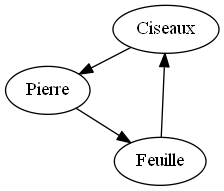
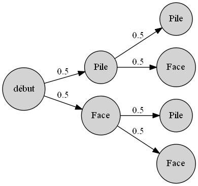
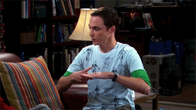
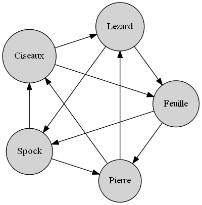
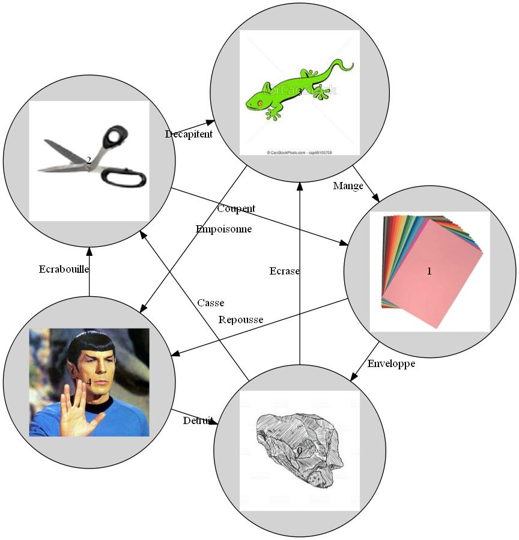

<!DOCTYPE html>
<html lang="en">
  <head>
    <meta charset="utf-8" />
    <meta name="viewport" content="width=device-width, initial-scale=1.0, maximum-scale=1.0, user-scalable=no" />

    <title>Présentation</title>
    <link rel="stylesheet" href="css/reveal.css" />
    <link rel="stylesheet" href="css/theme/solarized.css" id="theme" />
    <link rel="stylesheet" href="css/highlight/zenburn.css" />
    <link rel="stylesheet" href="css/print/paper.css" type="text/css" media="print" />

  </head>
  <body>


<div class="reveal">
	<div class="slides">  
    <section>
			<section data-markdown=""><script type="text/template">
###  Graphes
>Un graphe est une représentation d'un modèle  composé de sommets (appelés **noeuds**)et d'arêtes (appelés **lien**) 
reliant certains de ces sommets.
        </script>
       </section>
      <section data-markdown><script type="text/template">
###  Exemple 1 
Représentation des conditions de victoire du jeu pierre feuille ciseaux  

            </script></section>
            <section data-markdown><script type="text/template">
###   Exemple 2   
Simulation d'un lancer de pièces

                </script>
              </section>
    </section>

    <section>

        <section data-markdown><script type="text/template">## Mise en place  </script> </section>
          <section data-markdown><script type="text/template">
                Qu'il s'agisse de simulation de lancers de pièce ou des règles d'un jeu le principe est le même :
                **Créer chaque noeuds** et **établir les liens** qui existent entre eux. <br>
                Ce qui peut se faire ainsi dans l'exemple du jeu : 
                ```haskell
                creerGraph  ::  Gr L.Text L.Text
                creerGraph  = mkGraph
                [(0,pack "Pierre") , (1,pack "Ciseaux")  , (2,pack "Feuille")]
                [(0,1,pack "Casse"), (1,2,pack"Coupent") , (2,3,pack"Enveloppe")]
                                
                ```
          </script>
              </section>
              <section data-markdown><script type = "text/template">
  Reprenons le jeu précédent mais enrichissons le de deux nouveaux choix : Lezard et Spock
              <div>
                  <div style = "width : 40% ; float : left" >
                  
                  </div>
                  <div style = "width : 60% ; float : right" >
                        
                        ```haskell
creerGraph :: Gr L.Text L.Text
creerGraph  = mkGraph
([(0,pack "Pierre"),
(1,pack"Ciseaux"),(2,pack"Feuille"),
(3,pack "Lezard"),(4, "Spock")])
([(0,1,pack"Casse"),
(1,2,pack"Coupent"),
(2,0,pack"Enveloppe"),
(3,4,pack"Empoisonne"),
(4,1,pack"Ecrabouille"),
(1,3,pack"Decapite"),(3,2,pack"Mange")
,(2,4,pack"Repousse"),
(4,0,pack"Detruit"),
(2,3,pack"Ecrase")])
```
                  </div>
                  </div>  
          </script>
            </section>

          </section>
<section>
  <section data-markdown><script type="text/template">## Inconvenients et solutions </script> </section>

     
          <section data-markdown><script type="text/template">
            ### Le code est répétitif, on peut le factoriser
            
            ```haskell
creaGr ::  Gr L.Text L.Text
creaGr  = 
  let
    listTaill =[0.. ((List.length listChoix) - 1 )]
    affChoix = (List.map(\elt -> pack(show elt)) listChoix )
    zipl = List.zip ListTaill affChoix
    fl =List.map(\(x,y,z) -> (x,y,pack (show z))) associe2
  in mkGraph zipl fl
        
  ```
          </script> </section>
          <section data-markdown><script type="text/template">
              ### Il y a 5 noeuds et 10 relations, utiliser des types plutôt que des chaînes de caractères.
              
              ```haskell
data Choix = Pierre |Feuille| Ciseaux
    |Lezard| Spock  deriving (Show)

data PointFort  = Casse 
  |Coupent 
  |Enveloppe  
  |Repousse 
  |Ecrabouille 
  |Ecrase 
  |Empoisonne  
  |Detruit  
  |Mange 
  |Decapitent deriving(Show)
```


</script></section>
  <section data-markdown> <script type="text/template">
    ### Définir les relations entre les noeuds

    ```haskell
    associe ::  [(Int,Int, PointFort)]
    associe = 
        List.map(\(a,b,elt) -> (numero a, numero b, elt))[
  (Ciseaux, Feuille, Coupent),
  (Feuille, Pierre,  Enveloppe),
  (Pierre,  Ciseaux, Casse),
  (Lezard,  Spock,   Empoisonne),
  (Spock,   Ciseaux, Ecrabouille),
  (Ciseaux, Lezard,  Decapitent),
  (Lezard,  Feuille, Mange),
  (Feuille, Spock,   Repousse),
  (Spock,   Pierre , Detruit),
  (Pierre,  Lezard,  Ecrase)]
    ``` 
    <p style = "text-align : center"> <a href = "https://github.com/ljuglaret/Graphes/blob/gh-pages/gr.hs">Lien vers le code complet</a> </p>

  </script>

</section> 

</section>

         
<section >
  <section data-markdown> <script type="text/template">
    ###  Resultat
  
  
              </script></section>
              <section data-markdown><script type="text/template">
    ###  Autre Version
  <div > 
    <div style = "text-align : left; float : left ; width : 40%" >
  on peut aussi vouloir ajouter des images dans les noeuds, préciser les relations
  liant deux noeuds, ou bien changer l'apparence des noeuds.
    </div>
    
  <div>
  
  </div> 
  </div>    
          </script></section>
          
         
          <section data-markdown><script type="text/template">
            ### Ce qui change
           
            Ajout d'une image dans chaque noeud
            ```haskell 
            fn (_,l)   = [textLabel l] 
            --  représente les attributs d'un noeud
            ```
  
            ```haskell 
            fn (_,l)   = [Image (pack( (unpack l) ++".png"))]
            ```
            précision des relations entre noeuds
            ```haskell 
            fe (_,_,l) = [] 
            -- représente les attributs d'un lien
            ``` 
            ```haskell 
            fe (_,_,l) = [ textLabel l]
            ```
          </script></section>
        
        </section>
    
  
    </div>
  </div>         
         
</section>


<script src="js/reveal.js">
    </script>

    <script>

 function extend() {
        var target = {};
        for (var i = 0; i < arguments.length; i++) {
          var source = arguments[i];
          for (var key in source) {
            if (source.hasOwnProperty(key)) {
              target[key] = source[key];
            }
          }
        }
        return target;
      }

      // Optional libraries used to extend on reveal.js
      var deps = [
        { src: './plugin/markdown/marked.js', condition: function() { return !!document.querySelector('[data-markdown]'); } },
        { src: './plugin/markdown/markdown.js', condition: function() { return !!document.querySelector('[data-markdown]'); } },
        { src: './plugin/highlight/highlight.js', async: true, callback: function() { hljs.initHighlightingOnLoad(); } },
        { src: './plugin/zoom-js/zoom.js', async: true },
        { src: './plugin/notes/notes.js', async: true },
        { src: './plugin/math/math.js', async: true }
      ];

      // default options to init reveal.js
      var defaultOptions = {
        controls: true,
        progress: true,
        history: true,
        center: true,
        transition: 'default', // none/fade/slide/convex/concave/zoom
        dependencies: deps
      };

      // options from URL query string
      var queryOptions = Reveal.getQueryHash() || {};

      var options = extend(defaultOptions, {}, queryOptions);
    </script>

 <script>
document.body.onload = function() {
  addElement([
    "Correcteur orthographique",
    "Automate cellulaire : Jeu de la vie",
    "Voyageur du commerce",
    "Solution des tours de Hanoi",
    "Le problème des dames"
  ],"perso"),

  
  addElement([
    "Créer ou recupérer des données structurées au format CSV.",
    "Traiter ces données en apprenant à utiliser les bibliothèques dédiées dans un langage de programmation choisi."
  ],"donnees"),

  addElement([
    " Dans le navigateur, en JavaScript, ce qui sera l'occasion d'appliquer les notions précédentes concernant le WEB.",
    "Via Scratch."
  ],"jeuxInteractifs")}


function addElement (l1,lieu) { 
  for (var pas = 0; pas < l1.length; pas++) {
    var newDiv = document.createElement("div"); 
    var newLi = document.createElement("li");
    newLi.style.textAlign = "left";
    newLi.classList.add("fragment");
    
    var newContent = document.createTextNode(l1[pas]); 
    newLi.appendChild(newContent);  
    document.getElementById(lieu).appendChild(newLi);
  }
   
}
    </script>
<script>
      Reveal.initialize(options);
</script>
</body>
</html>
